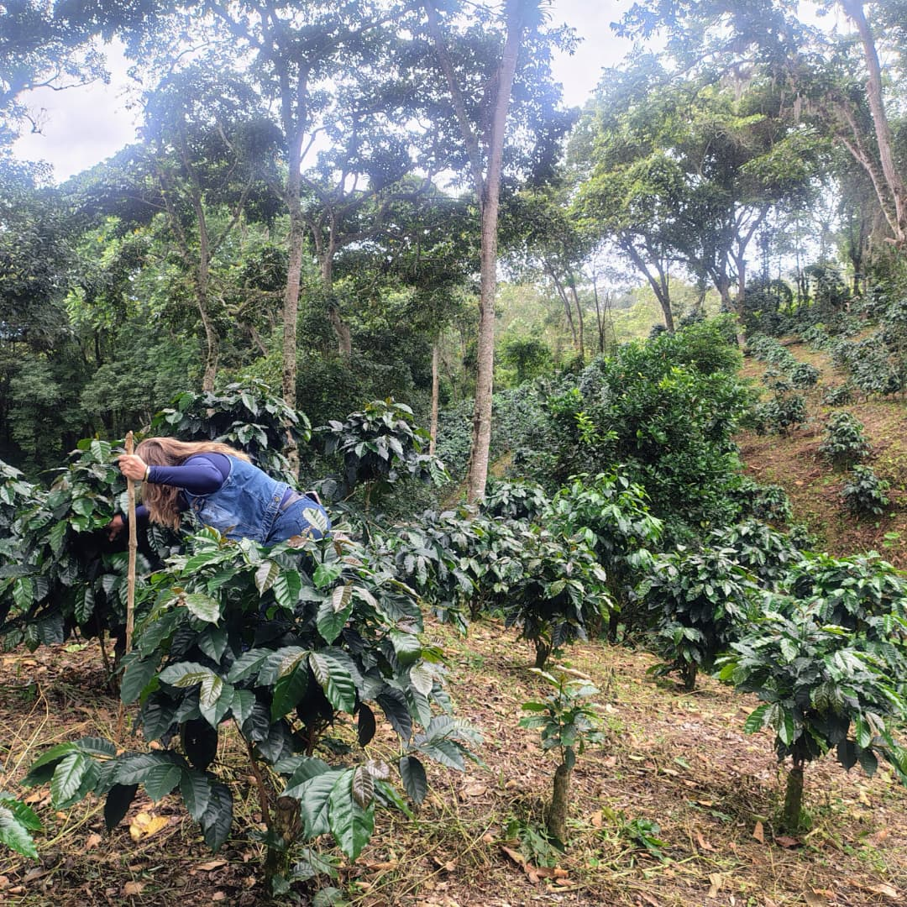
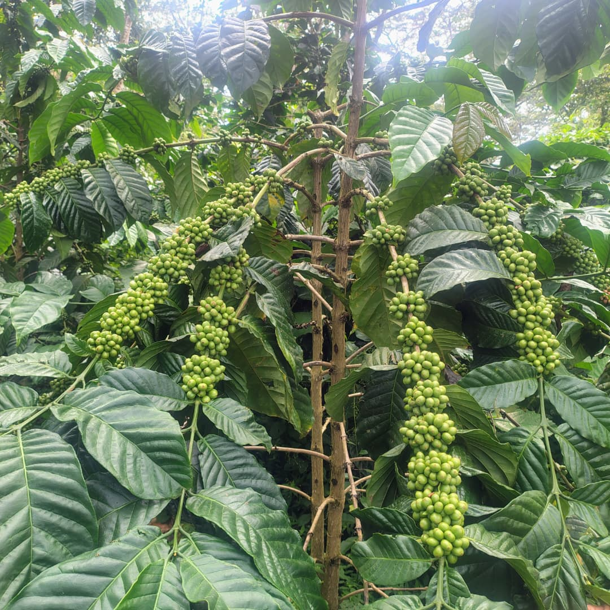
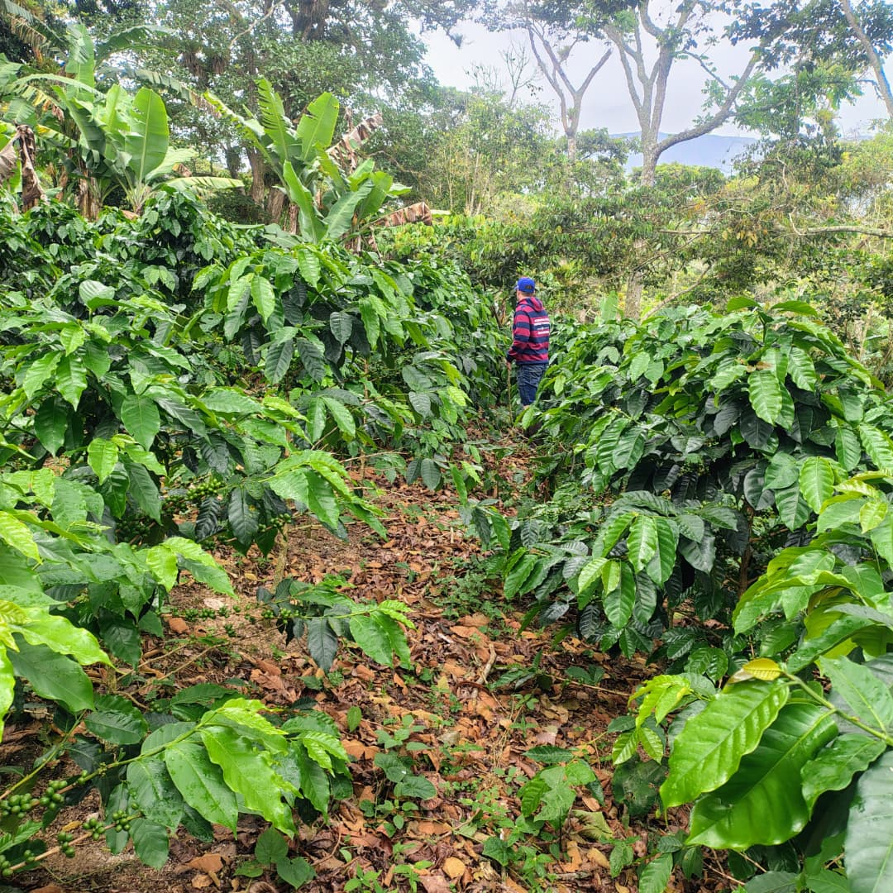
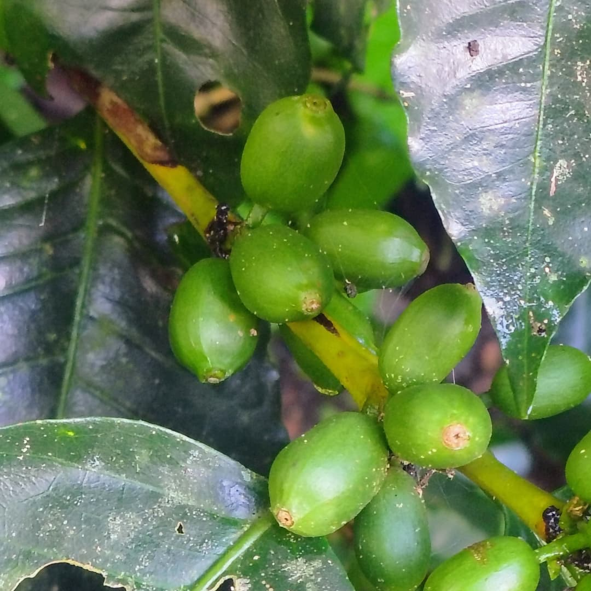
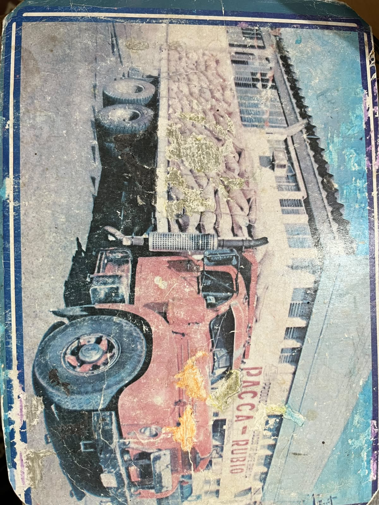

HISTORIA DEL CAFÉ
Los Corredores
Era a donde se bajaba el café en mulas, que venía desde Delicias, desde Villa Páez, Río Chiquito, la Revancha, que llegaban a este lugar, para hacer un control.
Los Alemanes
Decidirían que cargas (refiere a bultos) de café se bajaban, los cuales pesaban entre 65 kg, hasta 90 kg en algunos casos.

Las cargas Aprobadas
Se montaban en las mulas controladas por un Arriero, dirigidas hasta pasar Colón en San Félix, donde se bajaba a un ferry hacia el Lago de Maracaibo.

Distribución de cargas
Eran para los Alemanes quienes la enviaban a su país; de igual forma los Ingleses; y una parte distribuida a los Estados Unidos.

Su Exportación
Fueron toneladas y toneladas de café que se trabajaron enviando y exportando de esta forma, en tiempos donde no existía ni gandolas, ni carreteras.

El primer camino
No fue hasta antes de 1925, cuando se crea la primera carretera, que era más un camino, conocida como la Trasandina.
